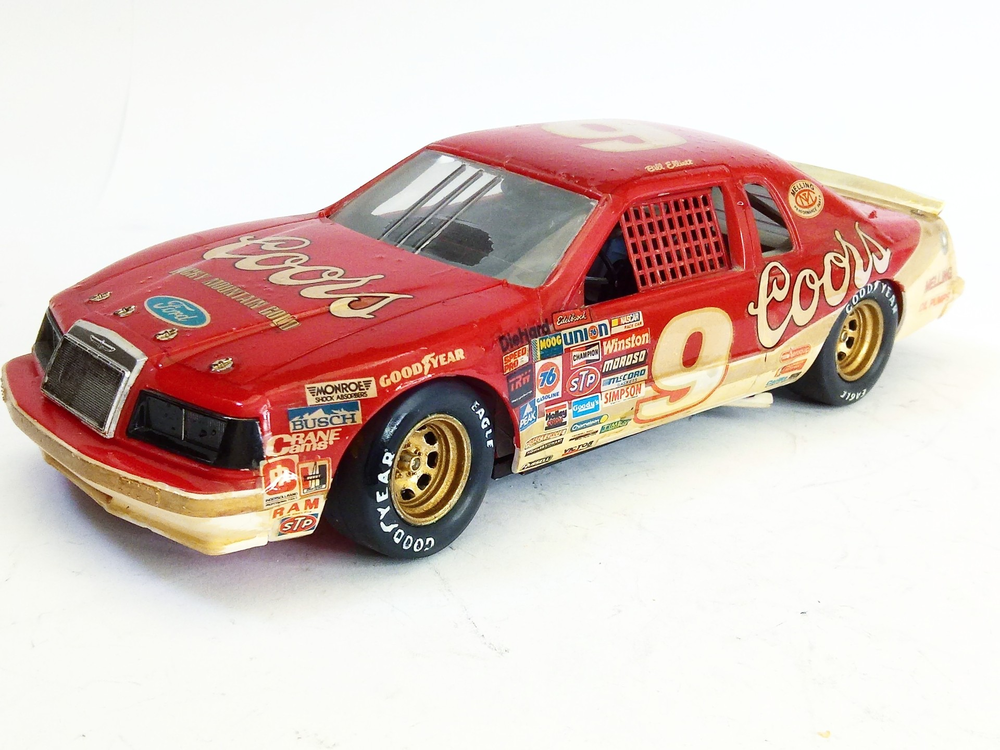
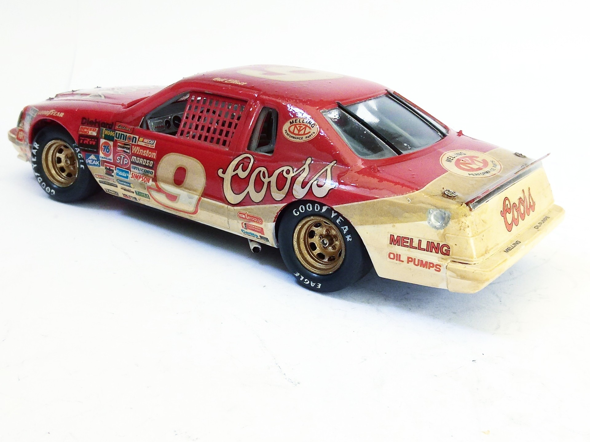
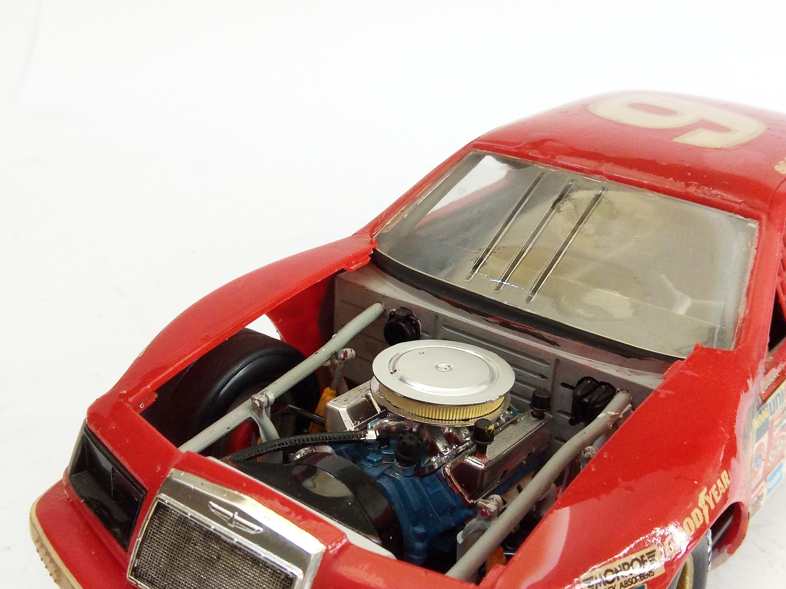
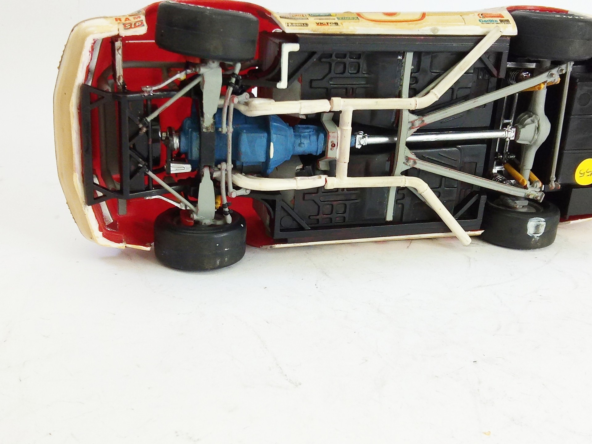

Auto e veicoli stradali · scale model archive
Ford Thunderbird Stock Car Coors
Ford Thunderbird Stock Car Coors — Kit: Monogram, Scale: 1/24. As raced by Bill Elliott NASCAR championship 1984, kit bought in the US #1/24 #Monogram

Photo gallery



English description
As raced by Bill Elliott NASCAR championship 1984, kit bought in the US
#1/24 #Monogram
Descrizione italiana
Come corse con Bill Elliott NASCAR championship 1984, kit bought nel US.